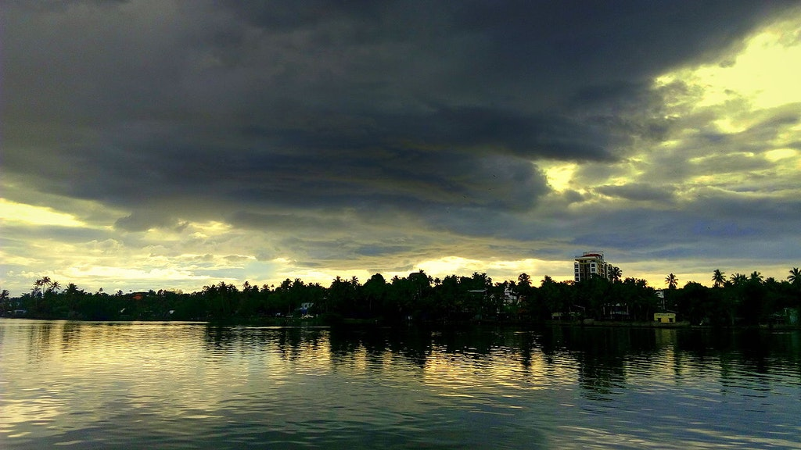
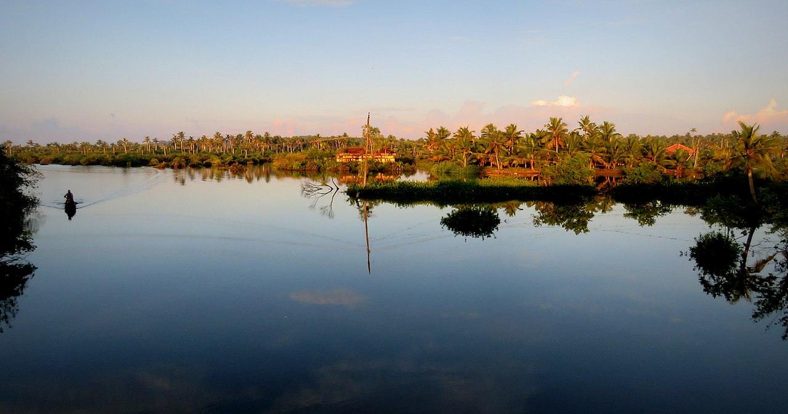
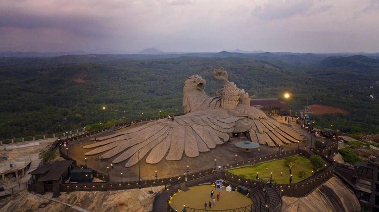
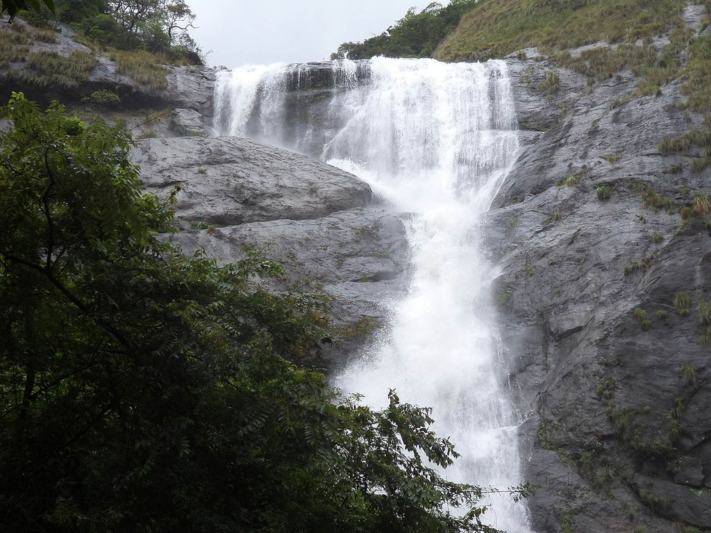

Kollam district (formerly Quilon) is one of 14 districts of the state of Kerala, India. The district has a cross-section of Kerala's natural attributes; it is endowed with a long coastline, a major Laccadive Sea seaport and an inland lake (Ashtamudi Lake). The district has many water bodies. Kallada River is one among them, and the east side land of river is East Kallada and the west side land is West Kallada.
Kallada Boat race is one of the famous festival events of the district. Even though it is a competition between two land sides of the river, many boat clubs from various places, even beyond the district participate in the event. Kollam is the capital of Kerala's cashew industry. Plains, mountains, lakes, lagoons, and backwaters, forests, farmland and rivers make up the topography of the district. The area had trading relationships with Phoenicia and Ancient Rome.
Ashtamudi Lake

One should definitely include this place in their top places to visit in Kollam and the most visited lake and backwater in the state. Rich green waterways lined with palm and coconut trees, there is no better place to start exploring Kollam that is considered to be one of the best Kollam tourist places. Ashtamudi translates to ‘Eight Coned’ in Malayalam. A houseboat trip to this lake is among the most popular places to visit in Kollam.
Munroe Island

Munroe Island or Mundrothuruthu is an inland island group located at the confluence of Ashtamudi Lake and the Kallada River, in Kollam district, Kerala, South India. It is a group of eight small islets comprising a total area of about 13.4 km2.[1] The island, accessible by road, rail and inland water navigation, is about 25 kilometres (16 mi) from Kollam by road, 38 kilometres (24 mi) north from Paravur, 12 kilometres (7.5 mi) west from Kundara and about 25 kilometres (16 mi) from Karunagapally.
Jatayu Earth's Center

Jatayu Earth Center, also known as Jatayu Nature Park or Jatayu Rock, is a park and tourism centre at Chadayamangalam in Kollam district of Kerala. It stands at an altitude of 350m above the mean sea level. Jatayu Nature Park holds the distinction of having the world’s largest bird sculpture, which is of Jatayu
Palaruvi Waterfall

Palaruvi means “milky streams”. You should visit this stunning waterfall located on the Kollam-Shencottah Road, which falls from 300 feet. An ideal time to visit this waterfall is from June to January. Even if you visit this place on a low-season, it is a beautiful picnic spot with your family. The 32nd highest waterfall in India, it is also known to have Ayurvedic resources. Do not forget to include this in your places to visit in Kollam.
ACCESSIBILITY
By Air, Thiruvananthapuram is the nearest airport from Kollam.
By Rail, Nearest railheads are at kollam.
By Road, The important towns of the district are well connected by road.